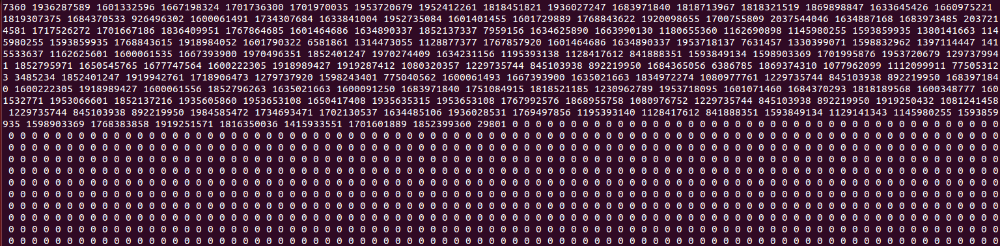
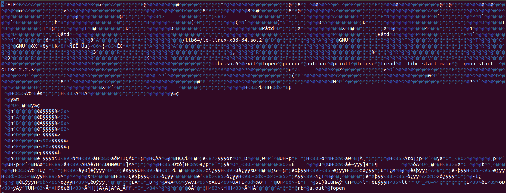

Binary I/O Functions
When the files are binary (such as .exe file), the previous functions will not work. Functions fread() and fwrite() are used for reading from and writing to a file on the disk respectively in case of binary files.
fread(void *buffer, size, number, FILE *stream);
fwrite(void *buffer, size, number, FILE *stream);
The parameter "buffer" is a pointer to buffer used for reading/writing the data, "void" here means that it is a pointer that can be used for any type variable. "size" represents the size of the objects to be read/written (for example, sizeof(char) for single bytes), "number" represents the number of objects to be read/written, and "stream" represents the file pointer or stream which the data is to be read from/written to.
If success, fread/fwrite return the number of items read or written. This number equals the number of bytes transferred only when size is 1. If fail, a lesser number of bytes is returned.
binary.c is an example that reads contents of a binary file (a compiled file) and print it on the screen.
/*binary.c*/
#include <stdio.h>
#include <stdlib.h>
int main(int argc, char* argv[])
{
FILE * fp;
int buffer[4096];
int i;
/* open binary file*/
fp = fopen("a.out", "rb");
if (fp == NULL) {
perror("fopen\n");
exit(EXIT_FAILURE);
}
else {
fread(buffer, sizeof(int), 4096, fp);
for (i = 0; i < 4096; i++) {
printf("%d ", buffer[i]);
}
putchar('\n');
}
fclose(fp);
return 0;
}
We can see the output as below.  If you read binary file with editors such as Emacs or Vim, you will get the following meaningless string: 